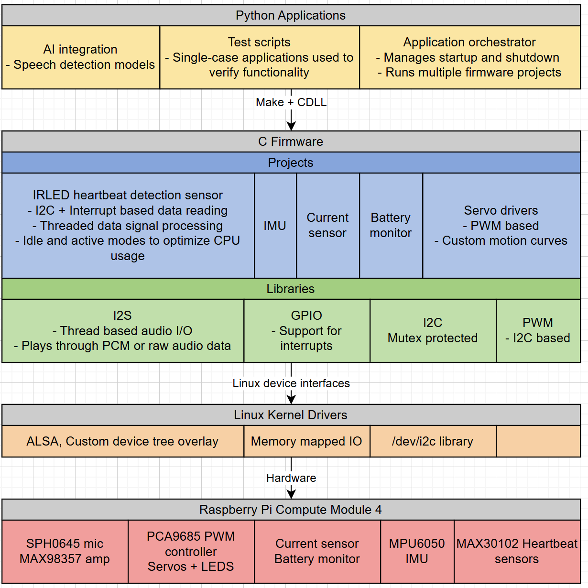
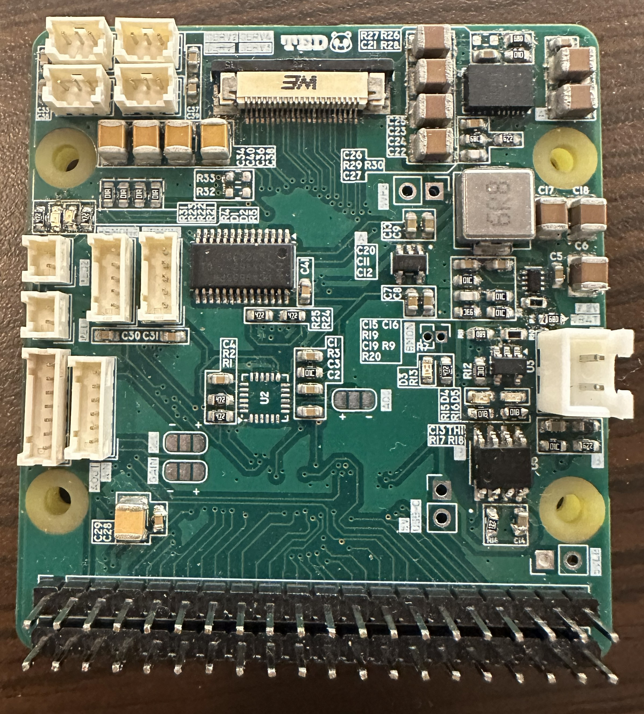
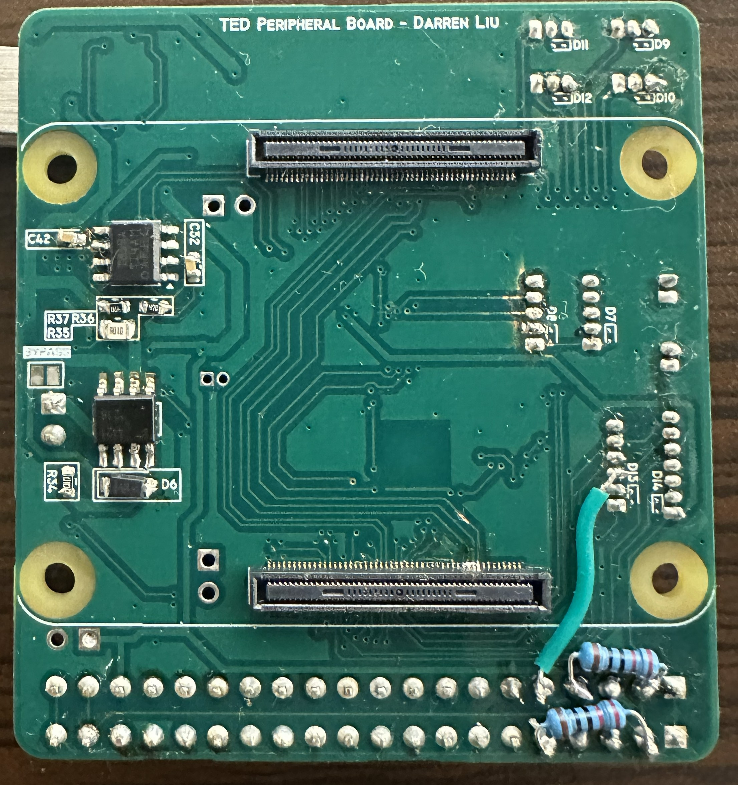
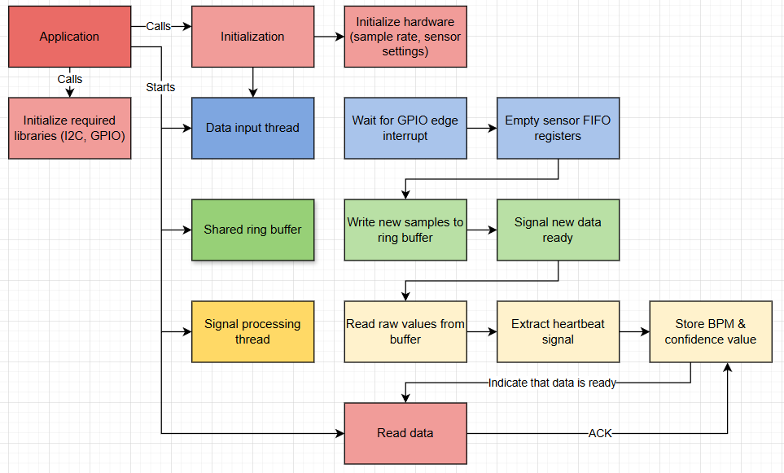
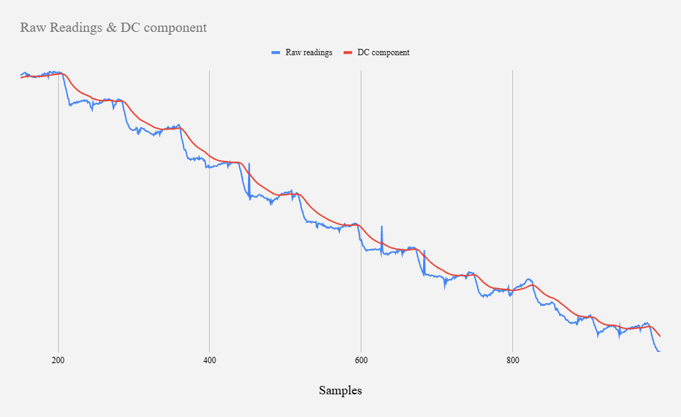
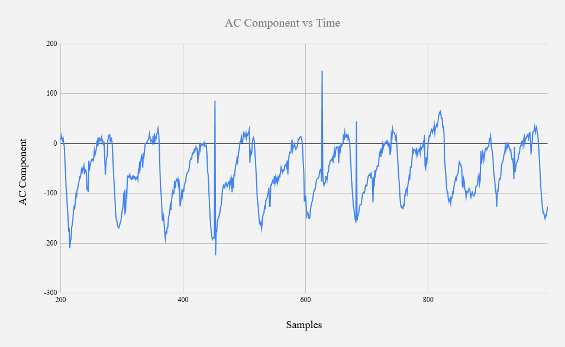
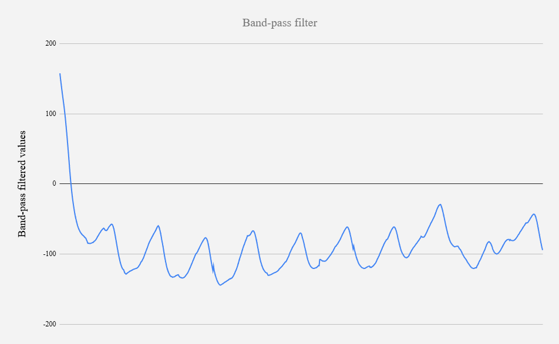
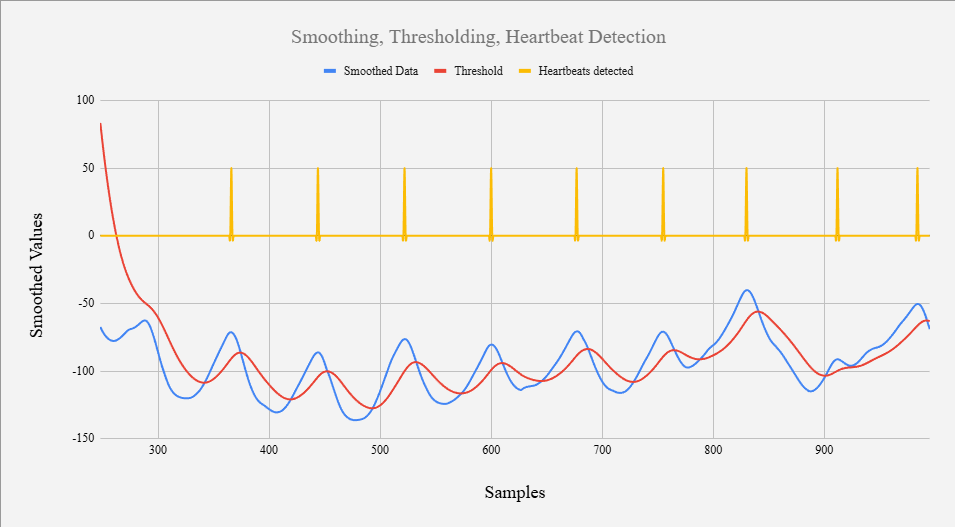

TED Hardware + Firmware Interface
2025 | In Progress
TED is a social robotics product under development that aims to care for its user through AI driven audio + video processing and features hardware peripherals such as motors and heart rate monitoring sensors.
I am designing and implementing the hardware and firmware stack for this project which is as follows:
Hardware
 
The project utilizes the Raspberry Pi Compute Module, which is a version of the RPi 4 with an emphasis on small form factor for custom use in embedded projects. My interface board for the CM4 allows for the usage of various hardware peripherals, and also manages power.
RPI CM4 interface board

Features:
- Power management: Two isolated buck regulators (for MCU/peripherals), 3.3V LDO, USB-C Li-ion battery recharging, current sense and low battery detection, ESD and reverse polarity protection
- Shared I2C bus featuring an integrated IMU, current sense IC, heart rate/blood oxygen monitors
- Microphone and speaker I/O over I2S
- 22-pin interface camera support with impedance controlled differential pairs
Heartbeat sensor integration
The heartbeat sensor subsystem features numerous threads that allow for continuous reading and processing of raw data. The multithreaded signal processing sequence is described below:
One of the more involved aspects of this process was extracting heartbeat signal from raw MAX30102 sensor readings.

As you can see, the raw readings have lots of noise and have to go through numerous signal processing steps in order to extract proper heartbeat data. The steps are as follows:
Step 1: Remove DC component of data with an exponential moving average (EMA)
Raw readings have a DC component caused my factors such as finger pressure, ambient light, and finger placement, and an AC component which captures the actual heartbeat. This DC component is isolated using an expected moving average formula, and is subtracted from the original signal, leaving the desired AC component of the signal.
 Step 2: Filter out unwanted frequencies using a band-pass filter (BPF)
Next, unwanted frequencies, mainly high frequency spikes are filtered out using a band pass filter. I chose an alpha value (0.04 * 100 samples per second = 0.25s = 250BPM) to ensure I was only filtering out frequencies well outside the range of typical heart rates.
Step 3: Smooth out function, generate a threshold function, detect local maximums
After applying some additional smoothing to the filtered function, I detect heartbeats by generating a second "threshold" function, which is a more dramatically smoothed version of the function. If a given point is a local maximum and is over the threshold, it is deemed a heartbeat.
